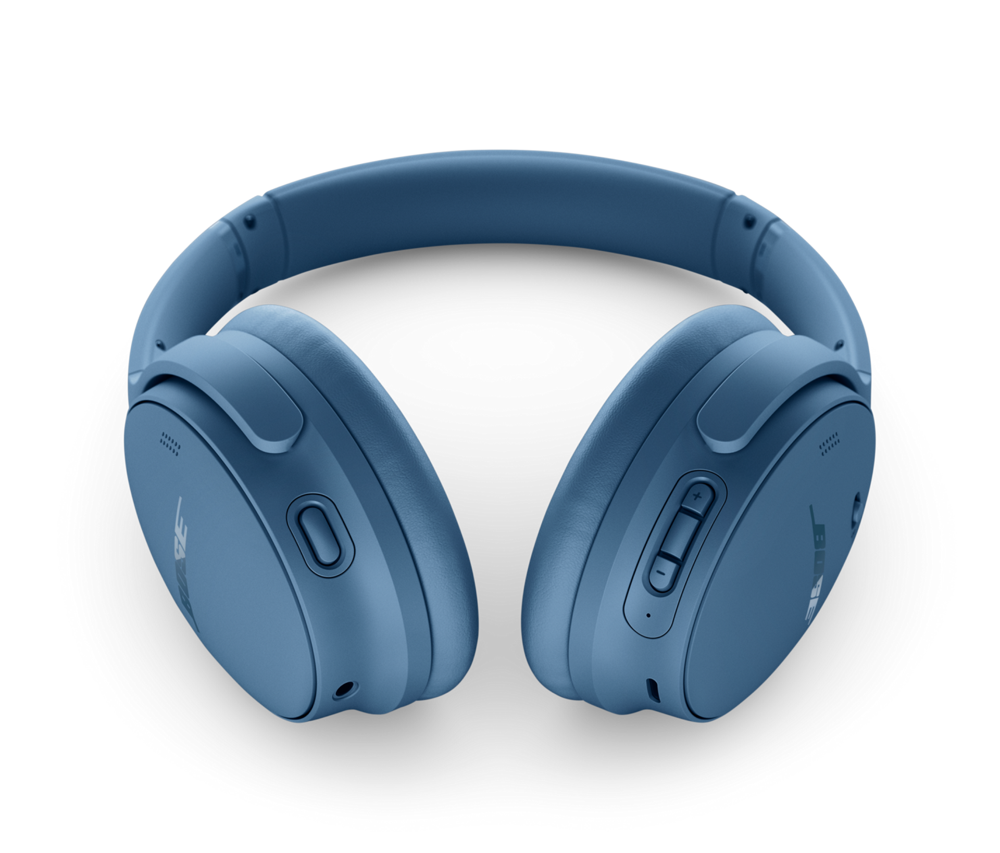

Yo this is my first EVER webpage!
It sure is about time I learned this...stuff. You have never met a guy who is more consumed with entertainment as am. If you say "good morning" to me, my mind will recall some random clip like... the Laurel & Hardy scene where a teacher made the class sing "Good morning to you" and Stan & Ollie bump their heads by accident. Just something crazy like that. There used to be a time when striking up a conversation about popular cinematic movies that I loved was my favourite ice breaker. But all that changed in recent times due to some outrageously sensative individuals. Ever since then I have had to learn to know my audience. I keep my hollywood movie talk to my closest friends. And it's not movies that take up my leisure time anymore. My playlist of awesome music excites me now more than ever! There has been a renewed appreciation for ABBA music throughout the world. Earlier this year I realized that drinking coffee to beat tiredness... has NOTHING on the fabulous music videos of ABBA. With using headphones, of course. I am telling you the voices of Agnetha and Ani-Frida with the lyric and music of Bjorn and Benny is like pure musical serotonin for me. Then I learned that 2 years ago Abba had already retured... with some new technologically cutting edge stuff in the form of avatars and that they are playing in their own purpose built area called Abba Voyage. The ABBATARS. That was in 2022 so imaged how annoyed I was at the youtube algorythm for not recommending this to me until just this year! 2024! GOSH DARN IT! Mark my words. One of these days I will make enough money to go and experience this spectacular event just for myself. I have enjoyed Abba songs ever since the re-releases in the 90s. If I was into music instead of film & television I would have discovered Abba instead of E.T. and The Incredible Hulk back then.